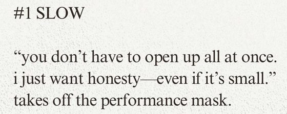
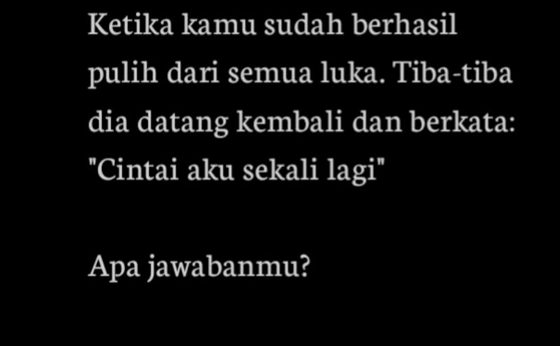
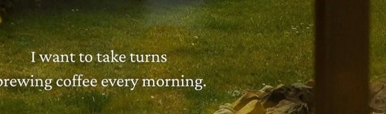
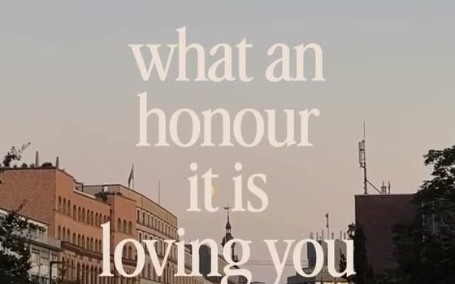
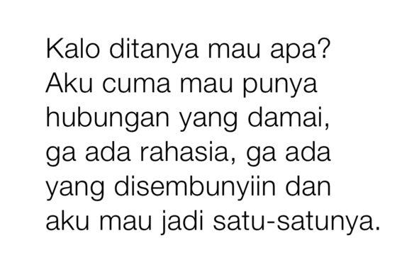
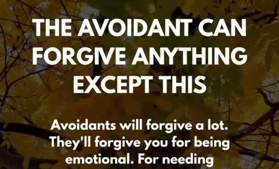

Ukuran teks diturunkan dan 6 kombinasi font dijejer di slide yang sama (palet sage, grain, copy dari mockup). Tiap kombinasi punya dasar dari font akun referensi. Pilih satu, lalu salin pilihannya ke chat.
| Elemen | Mockup v2 | Usulan baru | Referensi (tinggi baris terukur, % lebar) | Di HP lebar 390 px |
|---|---|---|---|---|
| Cover K1 | 6.6% | 5.4% | sincere cover 5.6 | ±21 px |
| Isi K1 (carousel) | 4.9% | 4.0% | sincere isi 4.7 · noteovt 2.7 | ±16 px |
| Kartu tunggal | 4.3% | 3.3% | noteovt 2.7 | ±13 px |
| Judul R1 | 7.0% | 5.6% | sincere judul CAPS 4.4 (huruf kapital terlihat lebih besar) | ±22 px |
| Isi R1 | 4.5% | 3.6% | sincere isi 3.4 | ±14 px |
Ukuran ditulis sebagai persen lebar slide. Kartu tunggal 3.3% masih di atas noteovt, tapi sudah di batas bawah keterbacaan di HP (W16), jadi tidak aku turunkan lagi. Isi carousel 4.0% sedikit di bawah sincere supaya slide terasa lebih lapang.
Potongan asli dari file yang di-download. Nama font di kartu kombinasi adalah perkiraan dari bentuk huruf, bukan file font aslinya.





